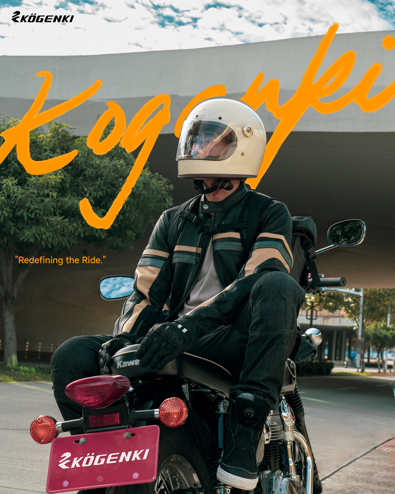

PORTFOLIO 2023–2026PRODUCT DESIGNBRAND DESIGNGRAPHIC DESIGN
Product & Brand
Designer
我是一名橫跨產品設計、品牌設計與平面視覺的設計師，主要處理服飾、配件、機能產品與生活風格品牌。KOGENKI 騎士裝備是目前最完整的實戰場域，但能力不侷限於騎士用品；我的核心是把市場需求轉成產品結構、視覺系統與可交付的設計文件。產品設計圖與工程圖以 Adobe Illustrator 繪製，電商 Banner 則以 Photoshop 合成 + AI 生成工作流 製作，兼顧精準繪製與商業視覺產出。
- ProductFashion / Accessory / Gear
- BrandPositioning / Visual System
- GraphicCatalog / Packaging / E-commerce
- DevelopIllustrator / Spec / OEM Handoff
KOGENKI — HELMET / GLOVE / LIFESTYLE CAMPAIGN

SEC. 01
Selected Case Studies
產品開發主案例
這三個案例用「痛點 → 解法 → 產品邏輯 → 結果」來呈現，不把作品集做成圖片倉庫。騎士用品在這裡是實戰題目；真正要被看見的是產品思考、品牌整合與落地交付能力。
Case 01 / Accessory Product
Airflux M2
Summer Glove System
夏季通勤手套的問題不是「有沒有保護」，而是使用者願不願意每天戴。Airflux M2 從炎熱、悶汗、厚重外觀三個阻力切入，把騎乘防護轉成更輕、更日常、仍有辨識度的配件產品。
- Pain Point夏天騎士容易因悶熱放棄戴手套；傳統防護手套視覺太重，日常穿搭接受度低。
- Solution使用高透氣網布、軟式拳眼護具與高對比 CMF，讓通勤手套兼具涼感、基本保護與品牌辨識。
- Logic以三視圖先固定掌背、掌心、側邊結構，再用配色稿測試系列化可能，降低工廠溝通與量產落差。
- Result黑／紅／白三色上市，成為 SS25 手套系列銷售冠軍之一。
VALUE: 把手套從「防護配件」轉成可被日常穿搭接受、可系列化銷售的產品。
Case 02 / Footwear Lineup
Gale C1 / Stratus C2
Urban Footwear Line
鞋類系列的核心不是做一雙「像車靴的鞋」，而是解決騎乘與日常穿搭之間的斷裂。Gale C1 與 Stratus C2 以同一套品牌語言，建立透氣與防水兩條產品路線。
- Pain Point傳統騎士靴太硬、太重、太機能化；一般街鞋又缺少護踝、換檔耐磨與雨天應對。
- Solution把 atop、BOUSUI、Ortholite、YKK 拉鍊等技術模組藏進街鞋輪廓，讓功能存在但不壓迫日常造型。
- LogicGale C1 對應炎熱透氣，Stratus C2 對應防水通勤；用雙路線建立產品線，而不是孤立單品。
- Result完成 Adobe Illustrator 工程圖、型錄技術敘事與量產上市視覺，支撐 SS25 鞋類商品架構。
VALUE: 從單品設計推進到產品線規劃，讓鞋款能以清楚的消費者語言被理解與銷售。
Case 03 / Apparel Concept
VELORA Jacket
Illustrator Flat to AI Visualization
服飾提案階段最容易卡在「平面圖看得懂，但穿起來想像不到」。VELORA 以 Adobe Illustrator 技術平面圖與 Spec Sheet 定義結構，再用 AI-assisted on-body visualization 模擬穿著比例與風格，用於提案討論與打樣前溝通。
- Pain Point防摔外套容易顯得笨重，且在未打樣前難以判斷版型比例、網布分區與日常穿搭感。
- Solution用工程圖標定正背側視、反光位置、可拆頭套與布料區域，再用 AI 模擬實穿情境輔助提案判斷。
- Logic將「開發文件」與「視覺模擬」分開標示：Illustrator Flat / Spec 用於工廠溝通，AI 視覺用於內部提案與造型驗證。
- Result完成概念提案包；目前為設計提案與 AI 視覺模擬，尚未標示為實際打樣品。
VALUE: 在樣品前期先降低溝通落差，同時保留誠實標示，避免把概念視覺誤導成量產實品。
SEC. 02
Bags & Carry
包款設計
以日常通勤與戶外移動為出發點的包款／攜行系統：防水捲口、外掛織帶、快取收納與夜間反光細節。這些案例雖來自騎乘場景，但設計方法可延伸到機能包款、城市配件與生活風格產品。
以下區塊保留完整產品線與視覺作品，用來支撐「作品量」；真正的主敘事已前移到 Case Studies，避免觀看者只滑圖、不理解你的開發價值。
KO-RSBP-01WATERPROOF BACKPACK / 16LMASS PROD.
Urban Drift 三視工程圖——針對通勤騎士「安全帽暫掛、雨天防水、停車後快速取物」三個痛點，將交叉織帶、捲口開合與磁吸金屬鉤整合成單一攜行流程；量產前以此圖面與工廠對齊縫線與五金規格。
KO-LB-01DROP-LEG BAGCMF STUDY
防水腿包 CMF 提案——沙色／灰螢光雙配色，防水拉鍊與快拆腿帶配置。
KO-CB-01CHEST RIGCMF STUDY
胸掛包結構圖——Y 字背帶與單手快扣，正面防水拉鍊袋為主收納，騎乘時重心貼合胸口。
KO-BP-02FLAP BACKPACK3D RENDER
掀蓋式通勤後背包——軍裝式雙插扣蓋板搭配側邊網袋，底部反光條對應夜間騎乘安全。
SEC. 03
Gloves
手套設計
以手部配件作為產品設計練習：從防護、舒適度、材料拼接、CMF 到商品系列化。以下呈現從手繪概念、Adobe Illustrator 向量工程圖、配色開發到實品攝影／擬真模擬的完整歷程。
XMS-R1RACE GLOVE — TECHNICAL FLAT性能騎士款
XMS-R1 競賽手套工程圖——長筒護腕設計，碳纖維拳眼護具搭配獨立浮動指節片。掌側耐磨護塊與腕部雙重固定帶一次標定，是系列中防護規格最高的賽道級手套。
XMS-R1RACE GLOVE — RENDERBLACK / WHITE / RED
XMS-R1 擬真模擬——從左方工程圖延伸的材質與光影模擬，驗證碳纖護具反光、麂皮掌心與配色在實物上的呈現。
KMG-CO03CONCEPT SKETCH / REDPHASE 1
Airflux M2 概念稿（紅）——掌背、掌心、側視三視角，定義軟式拳眼護具範圍與迷彩印花走向。
KMG-CO03CONCEPT SKETCH / YELLOWPHASE 1
配色開發（螢黃）——同版型替換色彩計畫，評估通勤族群的辨識度與日夜視認性。
KMG-CO03AIRFLUX M2 — PRODUCTION PRODUCTSS25 / 量產上市
Airflux M2 量產實品——超輕量網布結構，黑／紅／白三色到位。從左頁概念稿到右頁實品，完整走完開發閉環；本款為 SS25 系列銷售冠軍之一。
KMG-CR01ILLUSTRATOR / MUSTARD
復古打孔皮革手套工程圖——芥末黃。
KMG-CR01ILLUSTRATOR / CREAM
米白配色——細節含觸控指尖與腕扣皮標。
KMG-CR01ILLUSTRATOR / BLACK & TAN
黑色款——掌心防滑與護具配置同步標示。
KMG-CR01STORMRIDER C7 — PRODUCTIONSS25
Stormrider C7 量產實品——山羊皮 95%、浮動式拳眼護具。Vintage Soul, Modern Armor：左方工程圖的每一道沖孔與滾邊，在實品上一比一落地。
KMG-CR01ILLUSTRATOR / TAN + SPEC SHEET
駝色工程圖——對應實品棕色款，含掌心黑色耐磨拼接定位。
SEC. 05
Apparel
服飾設計
服飾線目前多為設計提案與樣品前期溝通階段，重點在於把防護、透氣、反光、安全與日常穿搭感整合在同一件衣服裡。以下產品平面圖皆以 Adobe Illustrator 繪製，搭配材料製單與 AI-assisted on-body visualization，用於對接廠商、內部提案與打樣前判斷。
NOTE / ON-BODY VISUALS ARE AI-ASSISTED CONCEPT MOCKUPS. ILLUSTRATOR FLATS / SPEC SHEETS 表示設計與製單邏輯；未標示為 Production 或 Sample 的服飾人物圖，不等同於實際打樣品。
VELORA 01ILLUSTRATOR FLAT半網布外套
VELORA 半網布外套・Illustrator 工程圖——正面、側面、背面與可拆式頭套四視角，定義網布範圍、反光印刷位置與連結拉鍊結構，凸顯向量繪製與結構標示能力。
VELORA 01SPEC SHEET / 製單01 SPEC
材料規格製單——逐項標註防風尼龍、大網眼、3mm 彈力抽繩、防水拉鍊等材料編號，配合領口車翻、魔鬼氈、彈力束口等工法說明，並附 KOMINE JK-179 參考樣品供工廠對位。這張即是交付工廠的開版依據。
VELORA 01AI VISUALIZATION — ON BODY概念模擬
VELORA AI 模擬實穿——用於提案階段確認版型比例、網布分區與整體穿搭語氣；此圖為 AI-assisted concept mockup，非實際打樣照片。
PUFFERILLUSTRATOR FLAT防風羽絨
防風羽絨外套・Illustrator 工程圖——以向量線稿定義格紋車線分倉、羅紋肩線與短版比例，作為提案與製單前的結構基礎。
PUFFERSPEC SHEET / 製單
羽絨外套製單——標註粗羅紋布料、尼龍防潑水面料、羽絨棉填充，含織標 LOGO 與固定織帶位置，並附 ONE BOY 參考樣品。
PUFFERAI VISUALIZATION — ON BODY
羽絨外套 AI 模擬——用於確認方格分倉、蓬度比例與短版廓形；此圖為概念視覺，不標示為實際打樣照片。
SPORT JACKETILLUSTRATOR FLAT運動外套
運動外套・多配色工程圖——以 Adobe Illustrator 繪製上下兩色系提案，含可拆頭套與褲裝成套規劃，呈現運動機能與日常穿搭的系列化方向。
RIDING JACKETAI VISUALIZATION — ON BODY
運動外套 AI 模擬——淺灰運動機能配色，輔助判斷側邊拼接、束口結構與整體穿搭比例；此圖為 AI-assisted concept mockup。
TRACKSUITAI VISUALIZATION — ON BODY運動套裝
運動套裝 AI 模擬——復古機能風配色拼接，外套＋長褲成套，用於快速確認提案比例與造型方向。
SEC. 06
Catalog / Packaging / E-commerce
型錄・包裝・電商視覺
這組作品聚焦平面設計與商業視覺輸出：型錄封面、產品跨頁、技術規格整理、鞋盒刀模與電商 banner。產品圖面與刀模以 Adobe Illustrator 繪製；Banner 以 Photoshop 合成、版面設計與 AI 生成素材整合完成。重點不是單張圖好看，而是把產品賣點、價格資訊、品牌語氣與平台曝光需求整理成可投放、可印刷、可延展的視覺系統。
SS25GLOVES CATALOG
手套型錄封面——以產品實拍局部作為主視覺，搭配粗筆刷字與黑橘高對比色，建立 SS25 手套系列的速度感與年輕語氣。
SS25FOOTWEAR CATALOG
鞋類型錄封面——以 Urban Rider Series 2025 作為系列標題，將車靴從硬派機能商品轉譯為城市通勤鞋類企劃。
PKGSHOE BOX DIELINE
鞋盒包裝刀模——黑底紅標延續 KOGENKI 識別，將尺寸資訊、QR code、側標與開盒視覺納入同一份可交付印刷檔。
SS25PRODUCT LINEUP SPREAD
手套系列跨頁——以性能、都會、日常三類分層，整理產品照片、售價、機能圖標與規格資訊，讓業務與消費者能快速比較款式差異。
SS25PRODUCT FEATURE SPREAD
Tempest R2 單品跨頁——左側以產品姿態建立視覺重量，右側用 callout 標記拳眼、防滑、透氣與耐磨細節，讓技術賣點可讀。
E-COMMERCE KV水洗復古包 / RETRO COLLECTION2026
水洗復古包電商 banner——以水洗丹寧、貼紙字與雙模特構圖建立復古街頭感，透過 Photoshop 去背合成、中文標題與 AI 輔助情境整合完成電商主視覺。
E-COMMERCE KVSTORMRIDER C7
Stormrider C7 手套 banner——以 Photoshop 整合手套多色款、人物形象、價格與規格資訊，建立上市主視覺；AI 生成／合成流程用於強化人物情境與版面張力。
E-COMMERCE KVURBAN DRIFT 16L
Urban Drift 16L 後背包 banner——以置物櫃與雙模特建立日常通勤情境，透過 Photoshop 合成把背包容量、防水、反光與穿搭感集中在一張電商主圖中。
E-COMMERCE KVGALE C1
Gale C1 鞋類 banner——用低角度人物情境凸顯鞋型輪廓，搭配手寫標題、價格資訊與產品賣點，將車靴商品轉成街頭穿搭廣告。
E-COMMERCE KVSTRATUS C2
Stratus C2 鞋類 banner——以主模特、三色產品與細節拆解呈現防水通勤靴的完整賣點；版面使用 Photoshop 合成與資訊分層，適合電商首屏與商品頁導流。
SEC. 07
Lifestyle Campaigns
品牌形象與情境視覺
這組作品處理的是品牌形象與生活風格敘事：人物、產品、交通工具、字體與標語如何組成一套可延展的品牌語氣。商業視覺以 Photoshop 合成與 AI 生成素材整合完成，重點是把產品放進「人會想成為那個樣子」的情境裡，而不是只做單品展示。
CAMPAIGN HEROFULL LOOK — HELMET / GLOVEBRAND KV
品牌形象主視覺——此張設定為品牌形象區第一張主圖。以騎士、機車、安全帽與手套形成完整穿搭情境，搭配手寫字與高彩度背景，讓品牌從單一商品延伸成生活風格形象。
FOOTWEAR KVNOT JUST SHOES. ATTITUDE.
鞋類主視覺・騎乘動態——以踩踏與騎乘動作帶出鞋款使用情境，將機能車靴包裝成帶有速度感的城市穿搭單品。
LIFESTYLEGALE C1 — STREET
鞋類日常情境——用坐姿街拍與丹寧穿搭凸顯鞋型比例，降低騎士鞋給人的厚重距離感。
LIFESTYLESTRATUS C2 — RAIL
鞋型輪廓特寫——低角度強化大底、鞋頭與全黑配色，讓防護鞋看起來更接近時裝配件而非純機能裝備。
PRODUCT MOODHELMET / GLOVE CLOSE-UP
安全帽與手套近景——以臉部遮罩、米白手套與復古配件建立質感焦點，將騎士用品轉成更生活化的造型語言。
LIFESTYLEBACKPACK / RIDER
後背包騎乘情境——用行進中的車身與背包位置建立產品使用感，讓後背包不只是靜物，而是通勤與騎乘生活的一部分。
CAMPAIGNBERLIN / W230 SIDE VIEW
復古車款品牌視覺——側面車身、人物坐姿與手寫字形成品牌識別畫面，適合作為社群貼文、Banner 或系列形象延展。
PRODUCT / VEHICLEKAWASAKI W230
車輛情境補充圖——以復古車款作為品牌世界觀的視覺錨點，補足輕鬆、城市、日常騎乘的生活風格背景。
SEC. 08
About
關於我
我是一名產品設計 / 品牌設計 / 平面視覺設計師，目前以 KOGENKI 作為主要實戰場域，負責服飾、包款、鞋靴、手套與品牌視覺的開發與輸出。
我的工作不只停在「畫出好看的圖」。我會從市場需求、使用情境與品牌定位切入，往下推到產品概念、Adobe Illustrator 工程圖 / Spec Sheet、樣品製單、OEM 溝通、打樣修正、型錄包裝與電商主視覺。也就是說，我關心的是產品如何被理解、如何被生產、最後如何被市場看見。
騎士用品是我目前最完整的產業案例，但我的能力核心更接近服飾配件產品開發 × 品牌視覺系統：能理解材料、結構與工法，也能把這些資訊轉成可銷售的視覺語言。
- ROLEProduct / Brand / Graphic Designer
- SCOPEMarket → Concept → Illustrator Flat / Spec → Visual System
- CATEGORY服飾・鞋靴・包款・配件・品牌視覺
- TOOLSAdobe Illustrator / Photoshop + AI Image Workflow
- OUTPUTProduct Proposal・Catalog・Packaging・E-commerce KV
- BASE台中，台灣